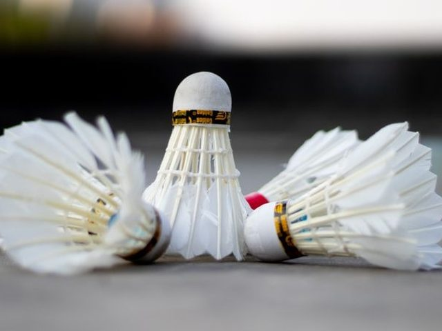
1badmintonn.
羽球運動
不可數；play badminton
We play badminton in the gym after school.我們放學後在體育館打羽球。
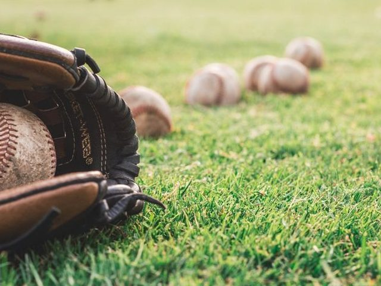
2baseballn.
棒球運動；棒球
運動不可數，球可數
Baseball is very popular in Taiwan.棒球在台灣很受歡迎。
3basketballn.
籃球運動；籃球
play basketball 打籃球
My brother plays basketball every Saturday.我哥哥每週六打籃球。
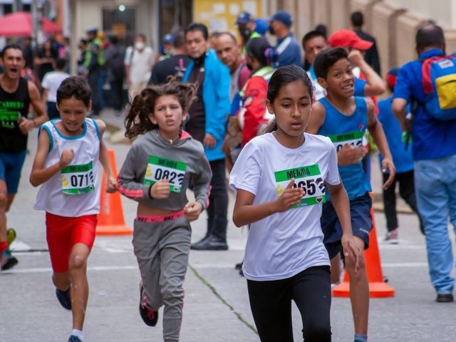
4racen./v.
賽跑；比賽；競速
run a race 賽跑
Let's have a race to the tree!我們來比賽跑到那棵樹！
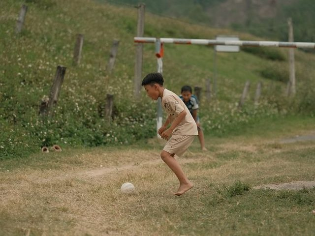
5soccern.
足球運動
不可數；美式說法
The boys are playing soccer on the field.男孩們在操場上踢足球。
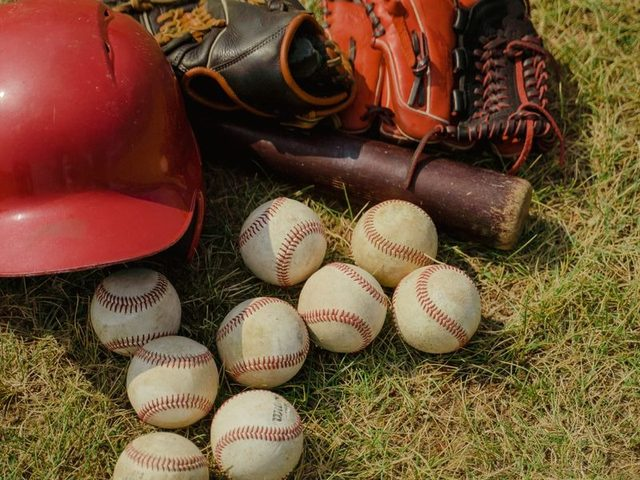
6sportn.
運動
sports 各種運動
What is your favorite sport?你最喜歡的運動是什麼？
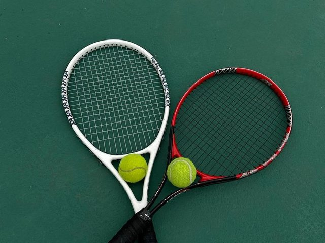
7tennisn.
網球
play tennis 打網球
Dad and I play tennis on Sunday mornings.爸爸和我週日早上打網球。
8campv./n.
露營；營地
go camping 去露營
We will go camping in the mountains this summer.今年夏天我們要去山上露營。
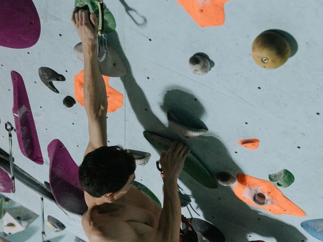
9climbv.
攀爬；爬
b 不發音；go mountain climbing 爬山
The cat climbed up the tree.貓爬到樹上了。
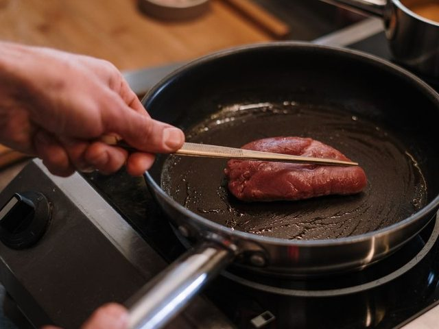
10cookv./n.
烹調；煮；廚師
a good cook 很會煮菜的人
Mom cooks dinner for us every day.媽媽每天為我們煮晚餐。
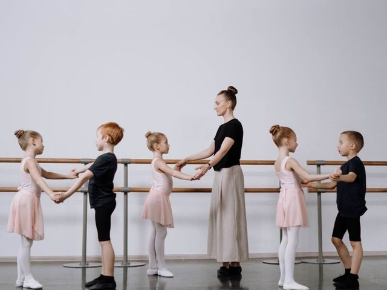
11dancev.
跳舞
dancing（去 e 加 -ing）
The kids danced happily at the party.孩子們在派對上開心地跳舞。
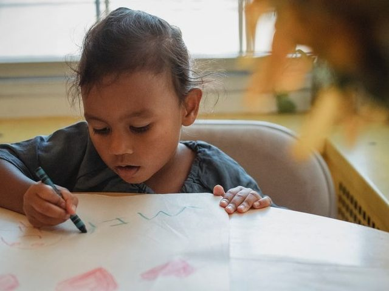
12drawv.
畫；拉；提（款）
draw – drew – drawn
Can you draw a cat for me?你可以幫我畫一隻貓嗎？
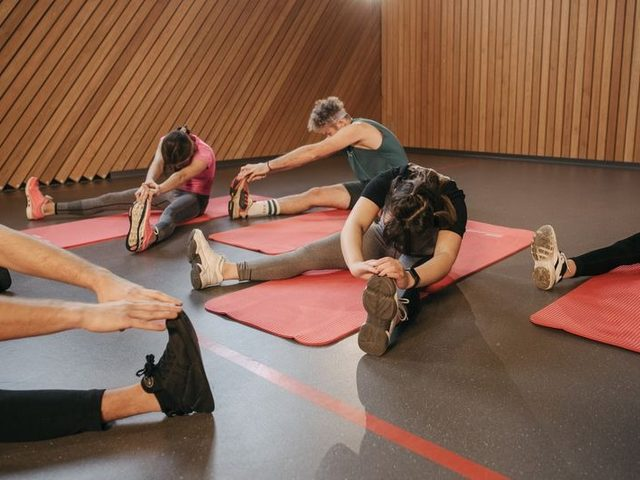
13exercisen./v.
運動；練習
運動不可數，練習題可數
Walking is good exercise.走路是很好的運動。
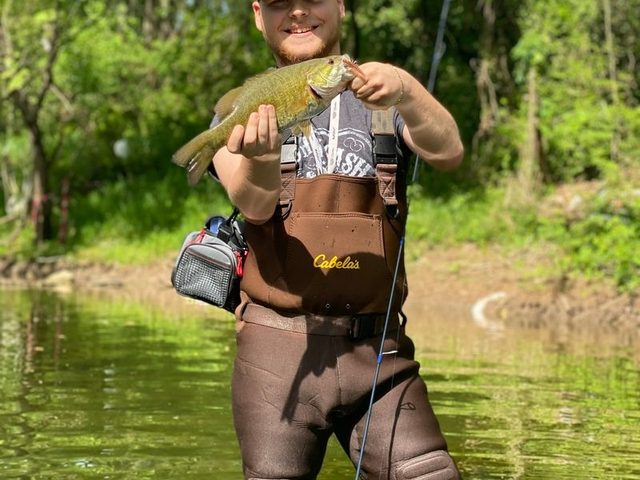
14fishv.
釣魚
go fishing 去釣魚
Grandpa likes to go fishing by the river.爺爺喜歡去河邊釣魚。
15hikev./n.
健行；遠足
go hiking 去健行
We hiked up the hill and saw the sea.我們健行上山，看見了大海。
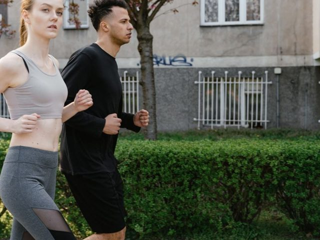
16jogv.
慢跑
jogging（重複 g）
My aunt jogs in the park every morning.我阿姨每天早上在公園慢跑。
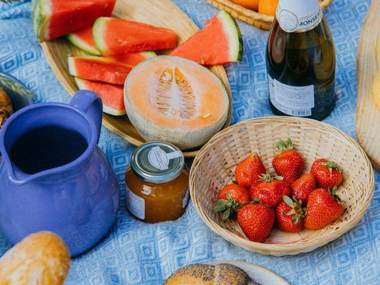
17picnicv./n.
野餐；郊遊
picnicking（加 k）
Let's have a picnic by the lake.我們在湖邊野餐吧。
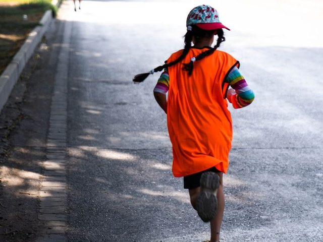
18runv.
跑
run – ran – run；running
Don't run in the hallway.不要在走廊上奔跑。
19sailv./n.
航行；帆；船
go sailing 去航行
They sailed across the lake in a small boat.他們乘小船航行越過湖面。
20singv.
唱歌
sing – sang – sung
Let's sing a song together.我們一起唱首歌吧。
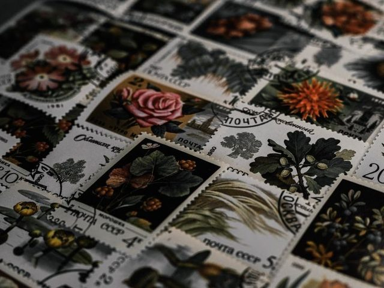
21stampn./v.
郵票；蓋章
collect stamps 集郵
My hobby is collecting stamps.我的嗜好是集郵。
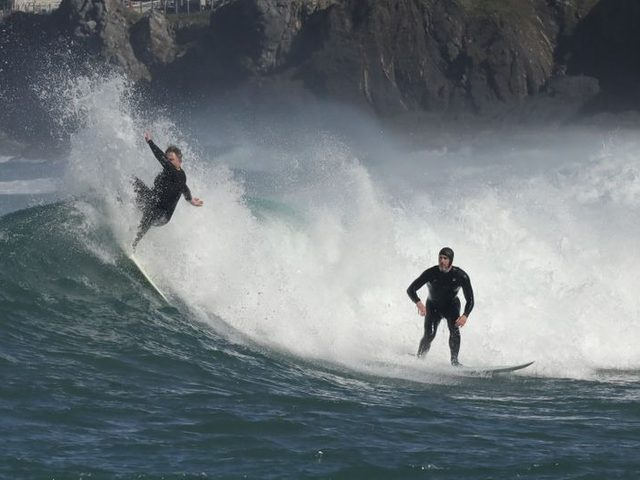
22surfv.
衝浪；上網瀏覽
surf the Internet 上網
They go surfing at the beach every summer.他們每年夏天都去海邊衝浪。
23swimv.
游泳
swim – swam – swum；swimming
Can you swim? — Yes, I can.你會游泳嗎？——會。
24tripn.
旅行
take a trip 去旅行
We took a trip to Hualien last week.我們上星期去花蓮旅行。
25hobbyn.
嗜好
複數 hobbies
My hobby is reading.我的嗜好是閱讀。
26bandn.
樂隊；樂團
a rock band 搖滾樂團
My cousin plays the drums in a band.我表哥在樂團裡打鼓。
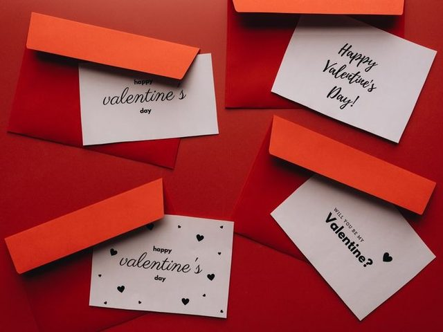
27cardn.
卡片
play cards 玩撲克牌
I made a birthday card for Mom.我為媽媽做了一張生日卡。
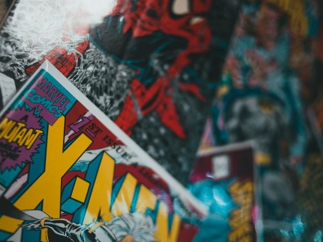
28comicn.
漫畫
comic book 漫畫書
He reads comics before bed.他睡前看漫畫。
🪆
29dolln.
洋娃娃
My little sister sleeps with her doll.我妹妹抱著她的洋娃娃睡覺。
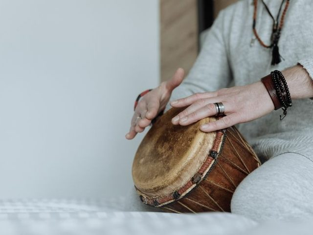
30drumn.
鼓
play the drums 打鼓
He hits the drum very hard.他很用力地打鼓。
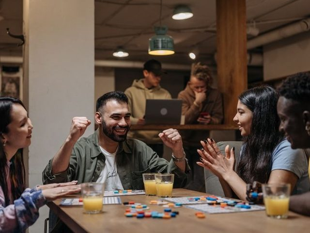
31gamen.
比賽；遊戲
play a game 玩遊戲
We won the basketball game!我們贏了籃球比賽！
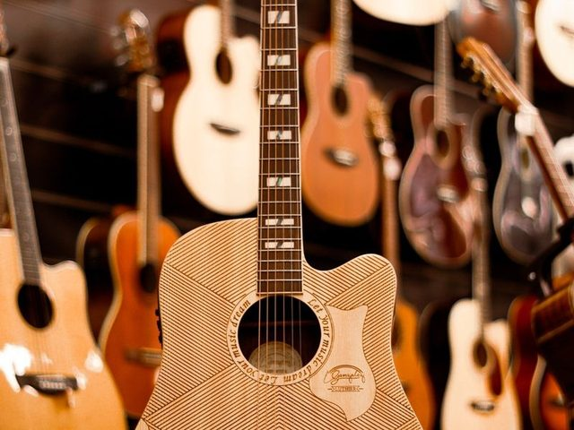
32guitarn.
吉他
play the guitar 彈吉他
Ben is learning to play the guitar.Ben 正在學彈吉他。
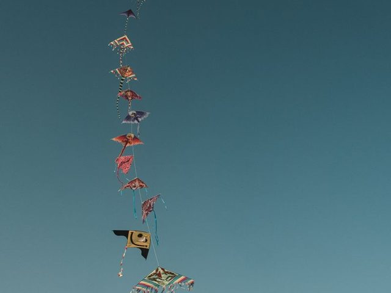
33kiten.
風箏
fly a kite 放風箏
It is windy today. Let's fly a kite.今天風很大，我們去放風箏吧。
34movien.
電影
go to the movies 去看電影
We watched a funny movie last night.我們昨晚看了一部好笑的電影。
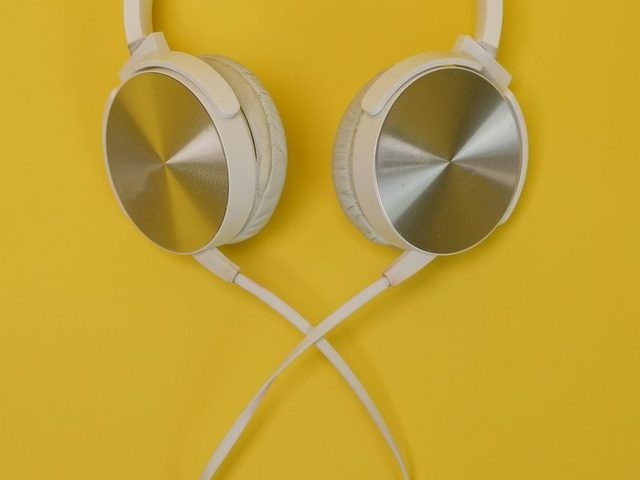
35musicn.
音樂
不可數
I like to listen to music in my free time.我有空時喜歡聽音樂。
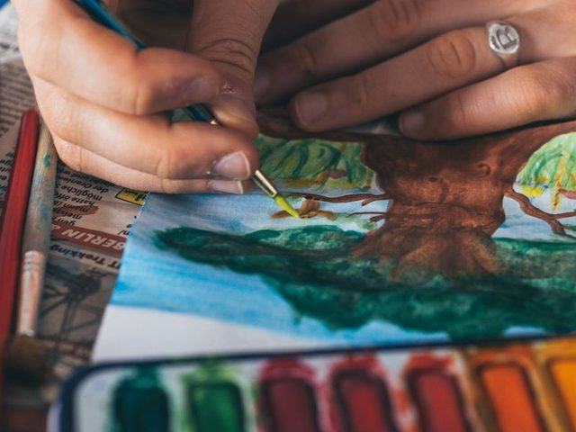
36paintn./v.
顏料；畫；油漆
paint a picture 畫畫
She likes to paint flowers.她喜歡畫花。
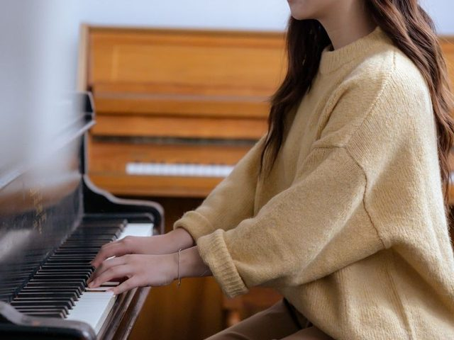
37pianon.
鋼琴
pianist 鋼琴家
Amy practices the piano every evening.Amy 每天晚上練鋼琴。
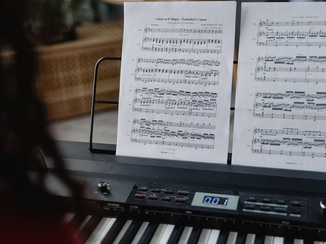
38songn.
歌
sing a song 唱歌
This is my favorite song.這是我最喜歡的歌。
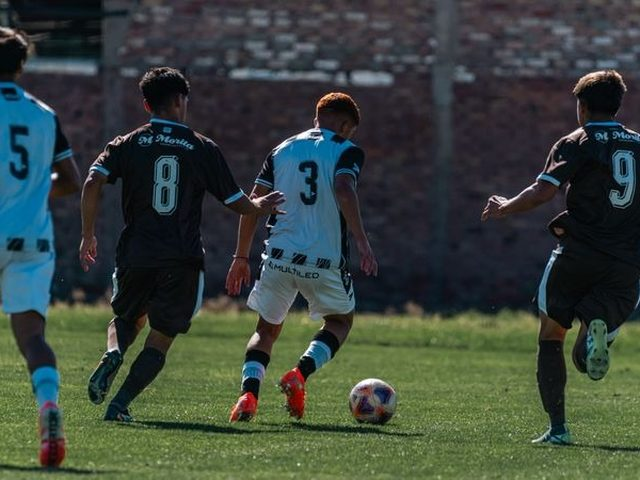
39teamn.
隊；團隊
on the team 是隊上的一員
Joe is on the school soccer team.Joe 是學校足球隊的一員。
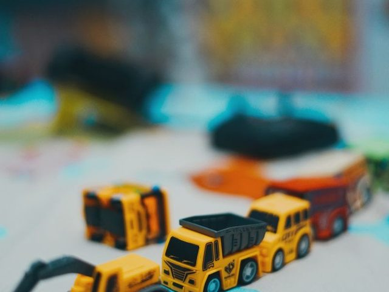
40toyn.
玩具
a toy car 玩具車
Please put your toys back in the box.請把你的玩具放回箱子裡。
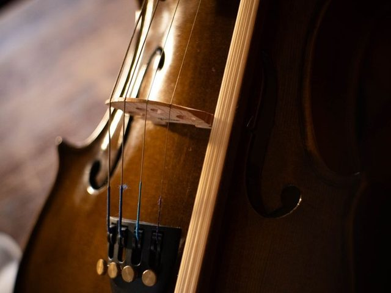
41violinn.
小提琴
violinist 小提琴家
She plays the violin in the school band.她在學校樂隊拉小提琴。
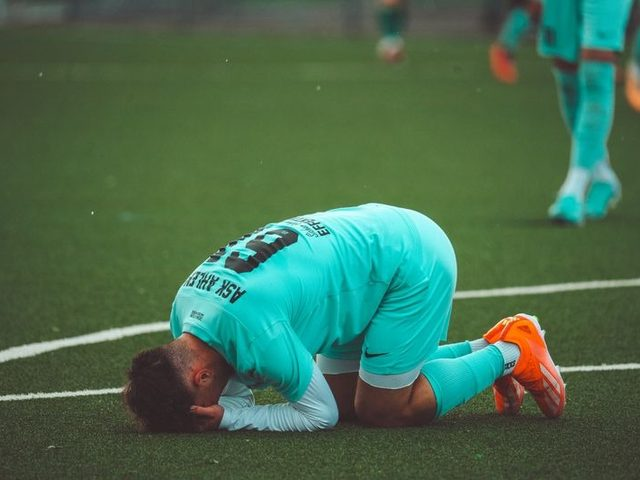
42losev.
輸；失去
lose – lost – lost
Our team lost the game, but we had fun.我們隊輸了比賽，但我們玩得很開心。
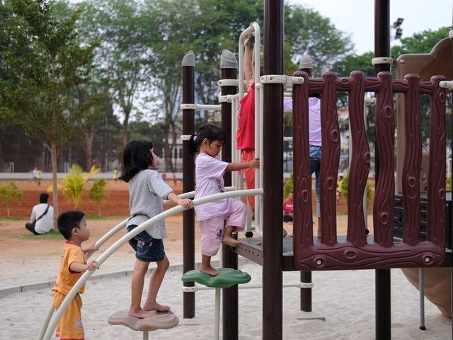
43playv.
玩；比賽；演奏
play + 球類；play the + 樂器
The children are playing in the park.孩子們在公園裡玩。
44winv.
贏
win – won – won；winning
Who won the race?誰贏了賽跑？
45fann.
粉絲；迷；扇子
a big fan of… 很迷…
I am a big fan of this baseball team.我是這支棒球隊的超級粉絲。